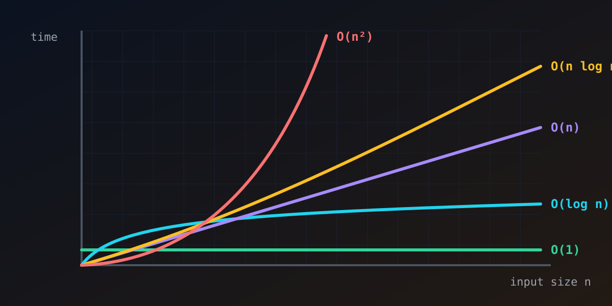

// algorithms · 6 min read
Big-O notation: why some code gets slow
Published Nov 11, 2026

Your code runs instantly on your test data of 100 items. Then a customer uploads 10 million, and the page times out. Nothing was "wrong" with the code. It just grew badly. Big-O notation is the tool for predicting that before it happens.
The idea: count growth, not seconds
Seconds depend on your laptop, your language and the weather. Big-O asks a sturdier question: as the input size n grows, how does the amount of work grow?
It deliberately ignores constant factors and small terms. An algorithm that does 3n + 50 steps is simply O(n), because for large n the shape of the curve is what decides your fate.
The usual suspects
- O(1), constant: the work doesn't grow at all. Reading
array[42]or looking up a key in a hash map. - O(log n), logarithmic: each step halves the problem. Binary search finds a name among a billion sorted entries in about 30 steps.
- O(n), linear: touch every item once. Summing a list, or finding the largest value.
- O(n log n): the speed limit for general-purpose sorting. Merge sort and the sorts built into most languages live here.
- O(n²), quadratic: usually a loop inside a loop over the same data. Comparing every pair, or bubble sort.
- O(2ⁿ), exponential: trying every subset. Fine for 20 items, hopeless for 100.
Why the curve matters so much
Here is roughly how many steps each class needs:
| n | O(log n) | O(n) | O(n log n) | O(n²) |
|---|---|---|---|---|
| 10 | 3 | 10 | 33 | 100 |
| 1,000 | 10 | 1,000 | 10,000 | 1,000,000 |
| 1,000,000 | 20 | 1,000,000 | 20,000,000 | 1,000,000,000,000 |
At a million items, the quadratic algorithm does a trillion steps. At a billion simple steps per second that's over 15 minutes, against a fraction of a second for O(n log n).
n grows 10×, O(n) gets 10× slower and O(n²) gets 100× slower.
A real example
Checking a list for duplicates by comparing every item with every other item is O(n²). Walking the list once and remembering what you've seen in a set is O(n), because each set lookup is O(1) on average. Same answer, one extra data structure, and the difference between milliseconds and hours.
Fine print
- Worst case vs typical case. Quicksort is
O(n log n)on average butO(n²)on unlucky input, which is why real implementations add safeguards. - Space counts too. Big-O also describes memory. Merge sort needs
O(n)extra space; some sorts need almost none. - Constants still matter for small n. For tiny inputs a "worse" algorithm with less overhead can win. That's why many library sorts switch to insertion sort for small chunks.
The takeaway
Big-O is a way of asking "what happens when this gets big?" before your users find out. Open the sorting lab to watch an O(n²) and an O(n log n) algorithm race on the same data, and count the comparisons yourself.